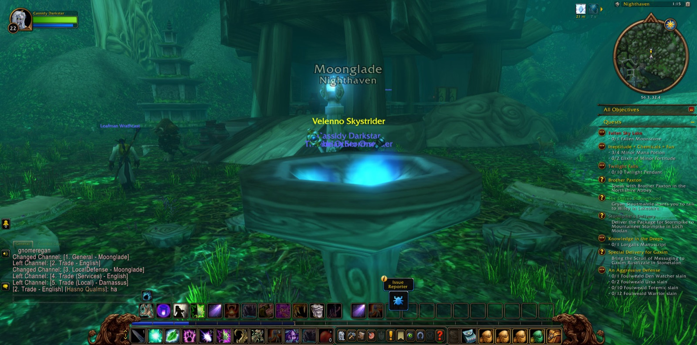
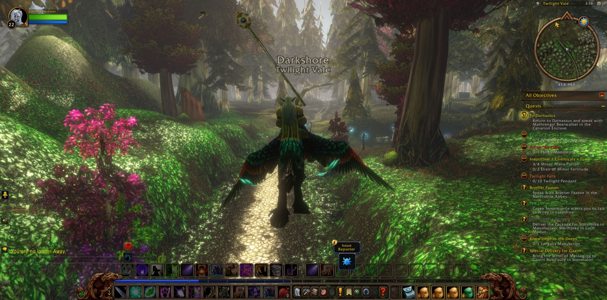
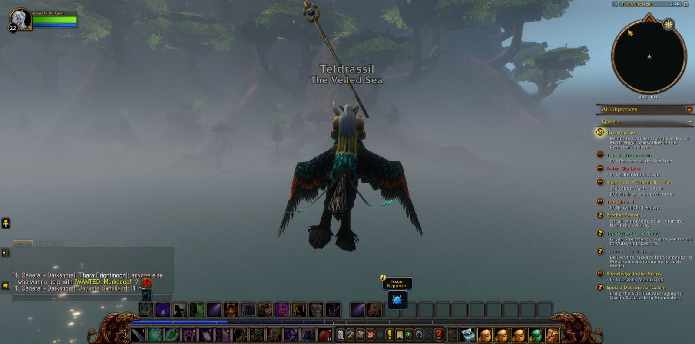
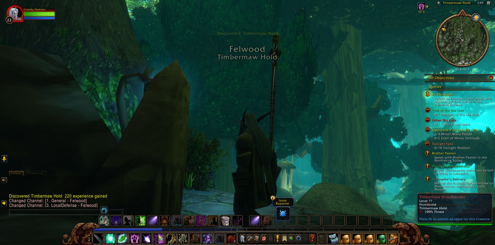
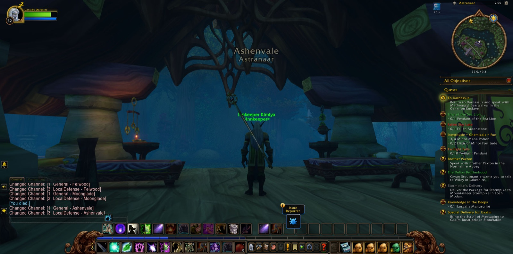

Cassidy Darkstar set out from Darnassus, as he had done before, and came by the old ways into Nighthaven in Moonglade. At the edge of that land he paused to take a picture, as a traveller marks the threshold of a place he means to remember. There he took up the errand called the Trial of the Lake. It led him out to the waters of Lake Elune'ara, then around to the Shrine of Remulos, and at the shrine the trial was finished. He did not rest on it. He took up at once the Trial of the Sea Lion, and that errand he carried with him still, unfinished, when the road turned elsewhere.
His feet next led him across the lake again and down into the Stormrage Barrow Dens. There he gathered what the task of the Great Cat Spirit asked of him: the Relic of the Silent Shadow, the Relic of the Fang, and the Relic of the Claw. Each was set aside in turn, one after another, until all three were his. With them he climbed back out by the lakeside, and the errand of the Great Cat Spirit was fulfilled. In its place came the Blessings of the Great Cat Spirit. That too he carried back across Lake Elune'ara to Nighthaven and saw through. The old shapes of the druids, it may be, were a little nearer to him for it. Then a new charge was laid on him, plain in its name: To Darnassus.


The way out of Moonglade was not straight. He came for a moment to Timbermaw Hold, at the border of Felwood, and took a picture there before he turned back. In Moonglade he fell once, and once rose again, and then went on. After that the long southward road opened before him. He came to Astranaar in Ashenvale, and took a picture there, then went westward through Ashenvale to Maestra's Post. From there he passed north into Darkshore by Twilight Vale, where he took another picture, and on by Twilight Shore and The Long Wash to Auberdine. Beyond lay Mist's Edge and the crossing of The Veiled Sea. As he came under the shadow of Teldrassil he took the last of his pictures, and so came to Rut'theran Village and climbed at length to Darnassus itself.


In the Cenarion Enclave the errand To Darnassus was brought to its end, and with it every charge he had set out to finish that night, save the Sea Lion's trial alone. Four errands accepted, four fulfilled; nineteen places passed through. Though Cassidy gained no new strength of level, the experience of the road was in him. He did not linger in the city. He went down again to Rut'theran Village, crossed The Veiled Sea once more, and came by Mist's Edge to Auberdine. There he stopped, with the Trial of the Sea Lion still unanswered and the shores of Darkshore before him.